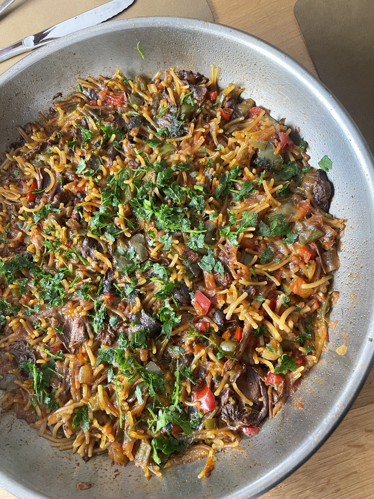

Fideuá vegetariana con setas
Ingredientes
4×
- aceite de oliva
- 1 pimiento rojo
- 1 pimiento verde
- 300 g de setas
- 2 tomates rallados
- 1 cdta de pimentón
- 400 g de fideos de fideuá
- 1 l de caldo de verduras
- perejil

Preparación
Paso 1
En una paella, sofreír con aceite de oliva 1 pimiento rojo y 1 pimiento verde picados, y 300 g de setas troceadas.
Paso 2
Añadir 2 tomates rallados y 1 cdta de pimentón, y sofreír hasta que se reduzca.
Paso 3
Añadir 400 g de fideos de fideuá, rehogar 1min y cubrir con 1 l de caldo de verduras caliente. Cocer a fuego medio hasta que se absorba el caldo, unos 10min.
Paso 4
Dejar reposar unos minutos y servir con perejil picado por encima.
Resumen
aceite de oliva
1 pimiento rojo
1 pimiento verde
300 g de setas
sofreír
2 tomates rallados
1 cdta de pimentón
sofreír
400 g de fideos de fideuá
1 l de caldo de verduras
perejil
rehogar Cocer